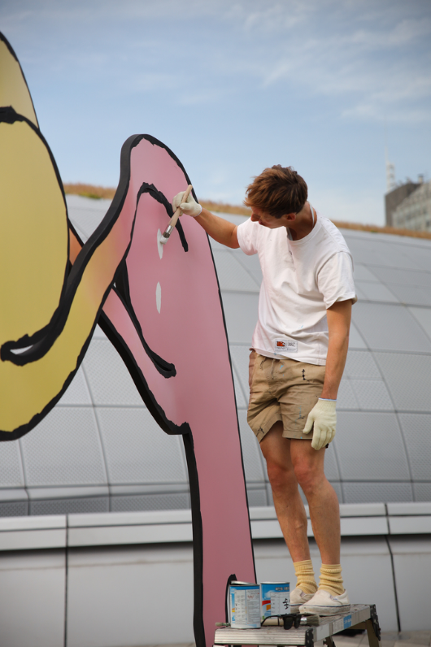

Q
핸드메이드 그래픽을 고집하는 특별한 이유가 있나요?A
내가 드로잉을 좋아한다고 컴퓨터를 싫어하는 것은 아닙니다. 좀 더 창의적이고 독특한 결과물을 만들어내기 위해 종이를 직접 만지며 작업하고, 드로잉 작업이 끝나면 그것을 컴퓨터에 옮겨 수정합니다.Q
당신의 그림일기에 그린 드로잉에 비해 상업물은 형태나 색채가 단순하더라. 이유가 있나요?A
다이어리에 그린 드로잉은 오로지 나를 위한 것이지만 광고나 포스터는 다른 사람에게 보여주기 위한 것이다. 전시를 위한 작업물은 ‘단순하게 표현하자’를 원칙으로 한다. 화장실 사인처럼 단순한 형태는 모든 사람이 이해할 수 있다. 나는 중국인, 아프리카인, 미국인 등 누구나 이해할 수 있는 세계적인 언어를 사용하고 싶다. 내가 만약 프랑스인만을 위한 작업을 했다면 프랑스인의 입맛에 맞는 결과물을 만들었을 것이다.Q
종이 작업을 즐기는 것 같다. 얼마 전부터 이런 스타일이 유행인 것 같은데?A
내 생각에 대략 2년 전부터 유행했던 것 같다. 센트럴 세인트 마틴을 졸업할 즈음 처음 종이 작업을 시작했다. 당시에도 유행이었기 때문에 어디에서나 그런 방식의 그래픽은 볼 수 있었다. 하지만 이후에는 에이전트에 더 이상 그런 식의 작업을 하지 않겠다고 얘기했다. 왜냐하면 내가 새로운 결과물을 고민하기 전에 이미 형식이 정해져버리기 때문이다. 한번은 뮤직 페스티벌 포스터 일을 한 적이 있었는데 내가 아이디어를 내기 전에 그들이 먼저 종이를 이용한 작업을 만들어달라고 요청했다. 그래서 종이를 이용한 작업은 더 이상 창조적이지 않다고 생각한 적도 있다. 지금은 유행이 좀 지난 듯하지만 그래도 종이를 이용한 작업은 항상 흥미롭다.Q
많은 디자이너나 아티스트가 당신처럼 블로그를 통해 자신의 작품을 발표하지만 그들 모두가 성공하는 건 아니다. 온라인으로 자기 작품을 알리고자 하는 젊은 디자이너에게 해주고 싶은 조언이 있다면?A
나는 블로그를 이용하는 것이 자신을 홍보하는 수단으로 아주 효과적인 방법이라고 생각한다. 예전에는 갤러리나 책을 통해서만 작품을 홍보할 수 있었지만 이제는 온라인을 통해 누구나 자신의 작품을 홍보할 수 있다. 경쟁은 더 치열해지겠지만 더 공정해졌다. 인터넷에서는 부자든 가난한 사람이든 동등하다. 나는 디자이너나 아티스트가 블로그를 이용하길 적극 권장한다.